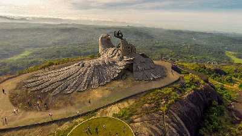
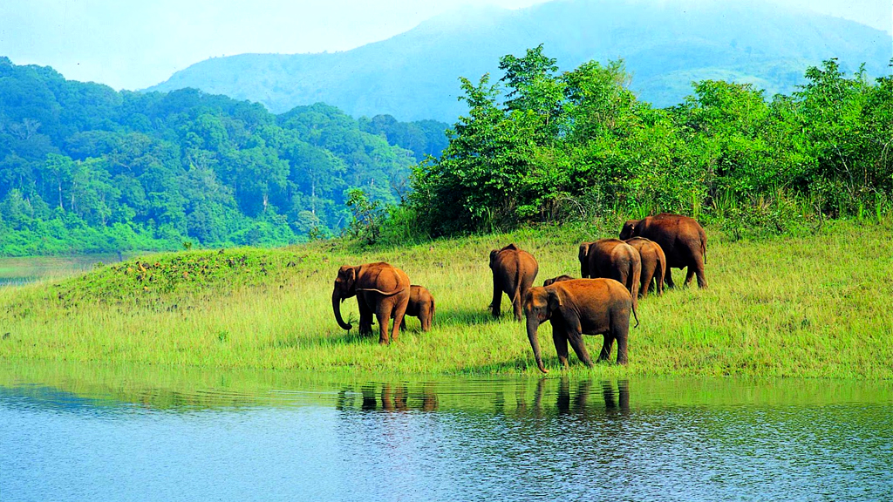
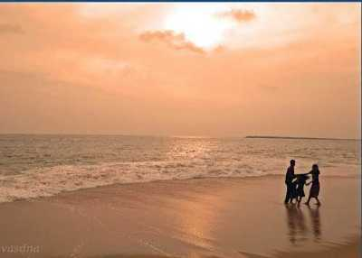
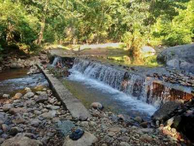
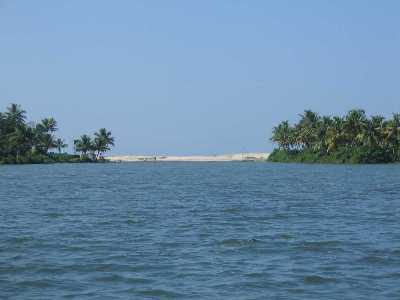
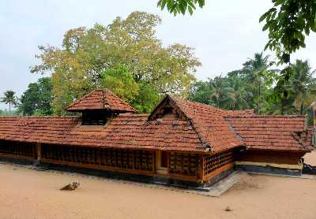

JATAYU EARTH'S CENTRE
Jatayu Nature Park is a rock-themed park under construction at Chandamalayam in Kollam district of Kerala, all set to open in August 2017. Built to promote mythology and adventure tourism, the tourism centre boasts of 6D theatre, an audio-visual digital room, cable car and ayurvedic cave resort

SHENDURUNY WILDLIFE SANCTUARY
The Shenduruny Wildlife Sanctuary is like a treasure trove for all nature lovers, photographers, archaeologists and biologists since the place is home to endless flowering plants, birds and trees. The vast floral and faunal variety that is found here is what attracts tourists from all across the country, and lures them to come and spend a day in silence and tranquillity at the wildlife sanctuary.

KOLLAM BEACH
Voted as the first 'Beach Wedding Destination' in Kerala, the Kollam Beach requires no introduction. This scenic and breathtaking natural wonder is also known as the Mahatma Gandhi Beach and boasts of pristine blue waters that seem to unite with the bright sky at an infinite distance, while tourists marvel at the sheer magnificence of the majestic scene.

KUMBHAVURUTI WATERFALLS
Known for its clear blue waters that cascade from majestic heights, the Kumbhavurutty Waterfall boasts of being on the top of the list of the most beautiful and magnanimous waterfalls in Kerala, and this scenic spot never fails to enthral tourists with its splendid views and colourful hues of the water fallings from a height of twenty-five metres.

ASHTAMUDI LAKE
Ashtamudi Lake located in the Kollam District of the Indian state of Kerala, is the most visited backwater and lake in the state. It possesses a unique wetland ecosystem and a large palm-shaped or octopus-shaped water body, second only in size to the Vembanad estuary ecosystem of the state. Ashtamudi means 'eight coned' (Ashta : eight and mudi : coned)

KULATHAPUZHA VILLAGE
A small village located on the Thiruvananthapuram-Shencottah Road, Kulathupuzha is renowned for its ancient Sastha Temple. The temple is situated on the banks of River Kulathupuzha and is installed with an idol of Bala Sastha, a form of Lord Hariharaputra.